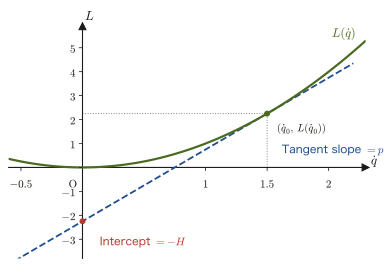
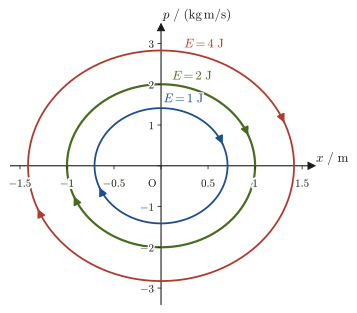
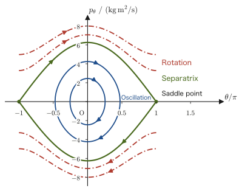
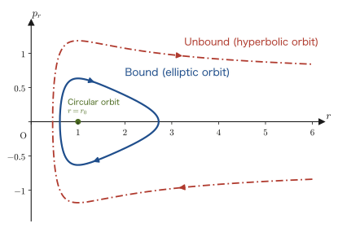

Chapter 45Hamilton's Canonical Equations and Phase Space
The Lagrangian formalism that we learned in Chapter 43 and Chapter 44 describes motion with the generalized coordinates $q_i$ and their time derivatives (the generalized velocities) $\dot q_i$ as the main characters. The equation of motion (Lagrange's equation) is a second-order differential equation for each $q_i$, and solving it requires information on both $q_i(t)$ and $\dot q_i(t)$. In this chapter we replace $\dot q_i$ as the main character with the generalized momentum $p_i=\partial L/\partial \dot q_i$ (Chapter 43), and thereby rewrite mechanics in a completely different form—the Hamiltonian formalism. Whereas the Lagrangian formalism consisted of “$n$ second-order differential equations,” the Hamiltonian formalism consists of “$2n$ first-order differential equations (the canonical equations).” The number of equations doubles, but each one is a simple first-order differential equation, and moreover, when we take the pairs $(q_i,p_i)$ (phase space) as the stage, the behavior of the motion can be illustrated with surprising clarity.
The operation of “replacing $\dot q_i$ with $p_i$” is in fact a general mathematical procedure that appears throughout physics, and it is called the Legendre transformation. Surprisingly, it is exactly the same mathematics as the operation in thermodynamics that constructs the enthalpy $H(S,p)$, the Helmholtz free energy $A(T,V)$, and the Gibbs energy (Gibbs free energy) $G(T,p)$ from the internal energy $U(S,V)$ (Section 31.5). “Replace a variable with its conjugate variable, and rewrite the function without losing any information at all”—in this chapter we first build up this idea carefully from scratch in the context of analytical mechanics.
In this chapter we build up from scratch the Hamiltonian formalism, the completed form of analytical mechanics—the definition of the Hamiltonian by the Legendre transformation, the derivation of the canonical equations, and the new stage called phase space. This material is also the starting point of Part VII (statistical mechanics) and of quantum mechanics in a separate textbook.
- The general theory of the Legendre transformation (the one-variable case), and, using it, the definition of the Hamiltonian $H(q,p,t)=\sum_i p_i\dot q_i-L(q,\dot q,t)$ (with $\dot q_i$ eliminated as a function of $p_i$)
- The derivation of Hamilton's canonical equations $\dot q_i=\partial H/\partial p_i,\ \dot p_i=-\partial H/\partial q_i$ by comparing the total differential of $H$ with that of $L$
- That $H=T+U$ (the mechanical energy) under constraints that do not depend explicitly on time (including an example where this fails to hold), and the derivation of the law of conservation of energy from $\dd H/\dd t=\partial H/\partial t$
- Rewriting the harmonic oscillator, the simple pendulum, and planetary motion in the Hamiltonian formalism, and confirming that the results agree with those of the Lagrangian formalism (Chapter 44) and the Newtonian formalism (Chapters 7 and 8)
- The concepts of phase space $(q,p)$ and phase trajectory, and drawing the elliptical trajectories of the harmonic oscillator and the separatrix of the simple pendulum
- That the momentum corresponding to a cyclic coordinate (a coordinate that does not appear explicitly in the Hamiltonian) is conserved
Source notes: Yasuhide Mochizuki, Physics Notes: Analytical Mechanics, p. 10.
45.1 From Generalized Momenta to the Hamiltonian — The Legendre Transformation
As we learned in Chapter 43, let the generalized coordinates of a system with $n$ degrees of freedom be $q_1,\ldots,q_n$ (collectively $q$), and let their time derivatives (the generalized velocities) be $\dot q_1,\ldots,\dot q_n$ (collectively $\dot q$; $\dot q_i=\dd q_i/\dd t$). Then, for the Lagrangian $L=L(q,\dot q,t)$, the generalized momentum is defined by
$$ p_i\equiv\pdiff{L}{\dot q_i}\qquad(i=1,\ldots,n) $$In the Lagrangian formalism we have described motion using the pairs $(q_i,\dot q_i)$—the configuration space and its “velocities.” In this section we prepare the mathematical procedure for describing the motion anew using $p_i$ in place of $\dot q_i$.
45.1.1 Why do we “change the lead role” from $\dot q_i$ to $p_i$?
Lagrange's equation $\dd(\partial L/\partial\dot q_i)/\dd t-\partial L/\partial q_i=0$ (Chapter 43) is a second-order differential equation containing $\dot q_i=\dd q_i/\dd t$. When we solve a second-order differential equation numerically, or when we examine the structure of its solutions, it often helps to rewrite it as “a row of many first-order differential equations” (for example, you may have had the experience of rewriting $\ddot x=f(x,\dot x)$, by setting $v\equiv\dot x$, as the system of first-order simultaneous equations $\dot x=v,\ \dot v=f(x,v)$). The Hamiltonian formalism achieves this “reduction to first order” not by a mere substitution, but by handing over the role of the velocity $\dot q_i$ completely to the momentum $p_i$, a new independent variable. Why, instead of using $\dot q_i$ as it is, do we go to the trouble of replacing it with the momentum $p_i$? If we merely wanted first-order equations, using $v=\dot x$ would suffice, so the advantage of the Hamiltonian formalism lies elsewhere.
- The equations are symmetric, and all of them come from a single function: As in $\dot q_i=\partial H/\partial p_i,\ \dot p_i=-\partial H/\partial q_i$, $q$ and $p$ appear on an equal footing (apart from the sign). Once the single function $H$ is fixed, all $2n$ equations are determined (Section 45.2).
- Conservation laws can be seen at a glance: If there is a coordinate that does not appear in $H$, the momentum corresponding to that coordinate is conserved (Section 45.6).
- Motion can be drawn as a picture: If we draw the trajectory of the motion in the plane with $(q,p)$ as its axes (phase space), we obtain an overview of the whole motion (Section 45.5). This viewpoint is also the starting point of statistical mechanics and quantum mechanics (Chapter 46, Part VII, and a separate textbook).
For now, let us first concentrate on understanding precisely the mathematical content of this replacement.
45.1.2 The Legendre transformation (the one-variable case)
The mathematical name for the operation of replacing $\dot q_i$ with $p_i$ is the Legendre transformation (named after the French mathematician Adrien-Marie Legendre of the 18th and 19th centuries). Surprisingly, exactly the same mathematics also appears in thermodynamics: the operation that, starting from the internal energy $U(S,V)$, replaces the independent variable $V$ with its conjugate variable $-p$ (pressure) to build the enthalpy $H(S,p)=U+pV$ (this $H$ is the “enthalpy” and $p$ is the “pressure”), and the operation that replaces $S$ with $T$ (temperature) to build the Helmholtz free energy $A(T,V)=U-TS$, are both Legendre transformations, as we saw in Section 31.5. We first review the general theory for the one-variable case, and then apply it to the case $\dot q_i\to p_i$.
Caution: The two meanings of $H$ and $p$, and the sign
The $H$ (enthalpy) and $p$ (pressure) of thermodynamics and the $H$ (Hamiltonian) and $p_i$ (momentum) of analytical mechanics are entirely different quantities. They arise from the same mathematics (the Legendre transformation), so the same letters happen to be used. In this chapter, unless stated otherwise, $H$ denotes the Hamiltonian and $p_i$ the generalized momentum. Also, as we saw in Chapter 31, the thermodynamic $A=U-TS$ and $H=U+pV$ are opposite in sign ($-g$) to the quantity $g=px-f$ defined below. In contrast, the Hamiltonian $H=\sum_ip_i\dot q_i-L$ has the same sign as $g$ ($f\to L$) and does not reverse the sign.
For a function $f(x)$ of one variable (convex, that is, curving upward; we suppose $f''(x)\gt0$), take the slope of the tangent line $p\equiv f'(x)$ as the new variable, and form the function
\begin{equation} g(p)\equiv p\,x-f(x) \label{eq:45-legendre-general} \end{equation}Here, for the $x$ on the right-hand side we substitute $x=x(p)$, obtained by solving $p=f'(x)$; this operation is precisely the Legendre transformation that we learned in Definition 31.2. The detailed derivation, and the explanation that “merely rewriting $f$ as a function of $p$ would lose the information about $x$, but $g$ does not,” are given in Section 31.5, so here we only confirm the conclusion. Differentiating $g$ with respect to $p$ using the product rule and the chain rule gives $\dd g/\dd p=x+p\,\dd x/\dd p-f'(x)\,\dd x/\dd p=x$ (the second and third terms cancel because $f'(x)=p$), so $x$ can be recovered from $x=\dd g/\dd p$, and we can return completely to the original function via $f=px-g$.
Intuition: The Legendre transformation as the intercept of a tangent line
As in Figure 45.1, the $y$-intercept of the tangent line to the curve $y=f(x)$ is $f(x_0)-p x_0=-g(p)$, and as we vary the slope $p$ of the tangent line, the sign-reversed intercept traces out $g(p)$ (the same interpretation as in Section 31.5). In this chapter we make the replacements $f\to L(\dot q)$, $x\to\dot q$, and $g\to H(p)$.

Example 45.1: The Legendre transformation of one variable
Let $a=2$. Find the slope $p$ of the tangent line to $L(\dot q)=\tfrac12 a\dot q^2$ at $\dot q_0=1.5$, and the value $H=p\dot q_0-L(\dot q_0)$ of the Legendre transformation. Also, express $H$ as a function of $p$ for general $\dot q_0$.
Solution. The slope is $p=\dd L/\dd\dot q=a\dot q_0=2\times1.5=3$. Also, $L(\dot q_0)=\tfrac12\times2\times1.5^2=2.25$. Hence,
$$ H=p\dot q_0-L(\dot q_0)=3\times1.5-2.25=4.5-2.25=2.25 $$For general $\dot q_0$, since $p=a\dot q_0$ gives $\dot q_0=p/a$, we have
$$ H=p\dot q_0-\frac12 a\dot q_0^2=p\cdot\frac{p}{a}-\frac12 a\left(\frac{p}{a}\right)^2=\frac{p^2}{a}-\frac{p^2}{2a}=\frac{p^2}{2a} $$Note that $L=\tfrac12 a\dot q^2$ has changed into the form $H=p^2/(2a)$—as we will see later in Section 45.2, this corresponds exactly to the fact that “the kinetic energy $\tfrac12 m\dot x^2$ is rewritten as $p^2/(2m)$” ($a\to m$).
45.1.3 The definition of the Hamiltonian
At this point we recall a quantity that will be treated in detail in Section 46.1: the energy function $h\equiv\sum_i\dot q_i\,\partial L/\partial\dot q_i-L$ (a quantity that is conserved when $L$ does not depend explicitly on time). Using $p_i=\partial L/\partial\dot q_i$, this can be rewritten as $h=\sum_ip_i\dot q_i-L$. The Hamiltonian $H$, defined next, is this quantity rewritten as a function of $(q,p,t)$ rather than as a function of $(q,\dot q,t)$ (only the variables are exchanged; the value is the same).
We now carry out the one-variable Legendre transformation we have just prepared simultaneously for the $n$ variables $\dot q_1,\ldots,\dot q_n$ (keeping the other variables $q_i,t$ fixed). With the correspondence $x\to\dot q_i$, $f(x)\to L(q,\dot q,t)$, $p\to p_i=\partial L/\partial\dot q_i$, it suffices to take the sum of Eq. \eqref{eq:45-legendre-general}:
Definition 45.1: The Hamiltonian
For a Lagrangian $L(q,\dot q,t)$, we use the generalized momentum $p_i=\partial L/\partial\dot q_i$ to express $\dot q_i$ as a function of $(q,p,t)$ and eliminate it (that is, we solve $p_i=\partial L/\partial\dot q_i$ for $\dot q_i$), and define
\begin{equation} H(q,p,t)\equiv\sum_{i=1}^n p_i\dot q_i-L(q,\dot q,t) \label{eq:45-H-def} \end{equation}The function $H$ of $q,p,t$ defined in this way is called the Hamiltonian (named after William Rowan Hamilton). Every $\dot q_i$ on the right-hand side is obtained by substituting the inverse function $\dot q_i=\dot q_i(q,p,t)$ of $p_i=\partial L/\partial\dot q_i$, and $H$ itself does not contain $\dot q$—all the information about $\dot q$ has been transferred to $p$.
Caution: The condition under which the relation can be inverted
In order to solve $p_i=\partial L/\partial\dot q_i$ for $\dot q_i$, the map $\dot q\mapsto p$ must be one-to-one (at least locally). For the ordinary mechanical systems treated in this textbook (systems whose kinetic energy $T$ is a quadratic form in $\dot q_i$ and is positive definite), this condition is automatically satisfied. Indeed, when $T=\tfrac12\sum_{jk}M_{jk}(q)\dot q_j\dot q_k$ ($M_{jk}$ is the mass matrix), $p_i=\partial L/\partial\dot q_i=\sum_k M_{ik}\dot q_k+(\text{terms not containing $\dot q$})$ is linear in $\dot q$, and as long as $M_{jk}$ is positive definite (the kinetic energy is positive for $\dot q\neq0$), the inverse matrix exists and the equations can be solved uniquely.
Caution: The same partial-derivative symbol, but different variables held fixed
$\partial L/\partial q_i$ and $\partial H/\partial q_i$ are both “partial differentiation with respect to $q_i$,” but they are different quantities. $\partial L/\partial q_i$ is the rate of change of $L$ when only $q_i$ is varied with $(q_j\ (j\ne i),\ \dot q,\ t)$ held fixed, and $\partial H/\partial q_i$ is the rate of change of $H$ when only $q_i$ is varied with $(q_j\ (j\ne i),\ p,\ t)$ held fixed. Since $\dot q$ is a function $\dot q(q,p,t)$ of $(q,p,t)$, when we vary $q_i$ with $p$ held fixed, $\dot q$ moves along with it. The resulting difference appears as the sign reversal in $\partial H/\partial q_i=-\partial L/\partial q_i$, which we obtain in the next section.
Math Tool: The total differential of a function of several variables
When we derive Hamilton's canonical equations in the next section, we use the expression for the total differential of $H(q,p,t)$, namely $\dd H=\sum_i(\partial H/\partial q_i)\dd q_i+\sum_i(\partial H/\partial p_i)\dd p_i+(\partial H/\partial t)\dd t$. This is nothing more than the total differential $\dd f=\sum_i(\partial f/\partial x_i)\dd x_i$ of a function $f(x_1,\ldots,x_n)$ of several variables (University Mathematics, Section 6.3), with the number of variables increased to $2n+1$ ($q_1,\ldots,q_n,p_1,\ldots,p_n,t$).
45.2 Derivation of Hamilton's Canonical Equations
We compute the total differential of the Hamiltonian $H(q,p,t)=\sum_i p_i\dot q_i-L(q,\dot q,t)$ (Definition 45.1) in two different ways and compare the coefficients—this is the standard method for deriving Hamilton's canonical equations.
Derivation: Hamilton's canonical equations
Method 1 (differentiate the defining equation directly). We differentiate the right-hand side of Eq. \eqref{eq:45-H-def} using the product rule. Since $\dd(p_i\dot q_i)=\dot q_i\,\dd p_i+p_i\,\dd\dot q_i$ (summed over $i$),
$$ \dd H=\sum_i\left(\dot q_i\,\dd p_i+p_i\,\dd\dot q_i\right)-\dd L $$On the other hand, the total differential of $L=L(q,\dot q,t)$ is (the total differential of a function of several variables, as in University Mathematics, Section 6.3)
$$ \dd L=\sum_i\pdiff{L}{q_i}\dd q_i+\sum_i\pdiff{L}{\dot q_i}\dd\dot q_i+\pdiff{L}{t}\dd t =\sum_i\pdiff{L}{q_i}\dd q_i+\sum_i p_i\,\dd\dot q_i+\pdiff{L}{t}\dd t $$(in the second term we used the definition of the generalized momentum, $p_i=\partial L/\partial\dot q_i$). Substituting this into the first equation, we obtain
$$ \dd H=\sum_i\dot q_i\,\dd p_i+\sum_i p_i\,\dd\dot q_i-\sum_i\pdiff{L}{q_i}\dd q_i-\sum_i p_i\,\dd\dot q_i-\pdiff{L}{t}\dd t $$and the terms $\sum_i p_i\,\dd\dot q_i$ cancel each other out exactly. This is the essential effect of the Legendre transformation. Since $\dot q_i$ is a function $\dot q_i(q,p,t)$ of $(q,p,t)$, $\dd\dot q_i$ could in principle be written as a linear combination of $\dd q,\dd p,\dd t$, but its coefficient turns out to be exactly 0, so $\dd\dot q_i$ vanishes without a trace from the expression for $\dd H$. What remains is
\begin{equation} \dd H=\sum_i\dot q_i\,\dd p_i-\sum_i\pdiff{L}{q_i}\dd q_i-\pdiff{L}{t}\dd t \label{eq:45-dH-step1} \end{equation}Method 2 (using the fact that $H$ is a function of $(q,p,t)$). On the other hand, $H$ was defined from the start as a function of $q,p,t$ (Definition 45.1), so by the formula for the total differential of a function of several variables we can also write
\begin{equation} \dd H=\sum_i\pdiff{H}{q_i}\dd q_i+\sum_i\pdiff{H}{p_i}\dd p_i+\pdiff{H}{t}\dd t \label{eq:45-dH-formal} \end{equation}Eq. \eqref{eq:45-dH-step1} and Eq. \eqref{eq:45-dH-formal} express the same $\dd H$ in two different ways, so the coefficients of the independent infinitesimal quantities $\dd q_i,\dd p_i,\dd t$ ($q,p,t$ are mutually independent variables) must each coincide. Comparing the coefficients of $\dd p_i$, of $\dd q_i$, and of $\dd t$, we obtain
$$ \pdiff{H}{p_i}=\dot q_i,\qquad \pdiff{H}{q_i}=-\pdiff{L}{q_i},\qquad \pdiff{H}{t}=-\pdiff{L}{t} $$(these are identities determined solely by the relation between $H$ and $L$; the equations of motion have not been used). Note that the sign on the right-hand side of the second equation is reversed (the Caution in the previous section). Finally, we use the equation of motion. From Lagrange's equation $\dd(\partial L/\partial\dot q_i)/\dd t-\partial L/\partial q_i=0$ (Chapter 43) and the definition of the generalized momentum,
$$ \pdiff{L}{q_i}=\diff{}{t}\left(\pdiff{L}{\dot q_i}\right)=\diff{p_i}{t}=\dot p_i $$holds (Lagrange's equation can be read as saying that “$\partial L/\partial q_i$ equals the time derivative of the momentum”). Substituting this into $\partial H/\partial q_i=-\partial L/\partial q_i$ gives $\partial H/\partial q_i=-\dot p_i$. Summarizing the above,
$$ \dot q_i=\pdiff{H}{p_i},\qquad \dot p_i=-\pdiff{H}{q_i}\qquad(i=1,\ldots,n) $$∎
Theorem 45.1: Hamilton's canonical equations
For the Hamiltonian $H(q,p,t)$, the motion obeys the following $2n$ simultaneous first-order differential equations (the canonical equations):
\begin{equation} \dot q_i=\pdiff{H}{p_i},\qquad \dot p_i=-\pdiff{H}{q_i}\qquad(i=1,\ldots,n) \label{eq:45-canonical-thm} \end{equation}In addition, as a by-product, $\partial H/\partial t=-\partial L/\partial t$ holds—the way $H$ depends explicitly on time is exactly opposite in sign to that of $L$.
Intuition: Structural difference — configuration space and phase space
Lagrange's equations are second-order differential equations for each of the $n$ coordinates $q_i$ (Chapter 43). The general solution of a second-order ordinary differential equation contains two arbitrary constants per coordinate (for example, the initial position $q_i(0)$ and the initial velocity $\dot q_i(0)$) (recall the structure of the general solution of a second-order linear differential equation in University Mathematics, Section 35.1, and the general solution $x=C_1\cos\omega t+C_2\sin\omega t$ (two arbitrary constants) of simple harmonic motion in Section 7.1). In contrast, the canonical equations \eqref{eq:45-canonical-thm} are first-order differential equations for each of the $2n$ quantities $q_i$ and $p_i$ taken together. The solution of a first-order ordinary differential equation is determined by one initial value per variable ($q_i(0)$ or $p_i(0)$), so again a total of $2n$ initial values are needed, and the number of degrees of freedom of the motion that can be described does not itself change. What differs is “how the information is carried”—in the Lagrangian formalism the state of motion is specified by the pairs $(q_i,\dot q_i)$ (configuration space and its tangent vectors), whereas in the Hamiltonian formalism it is specified by the pairs $(q_i,p_i)$ (phase space; treated in detail in Section 45.5). Both are equivalent ways of describing the same physics, and which is more convenient depends on the problem at hand.
Example 45.2: Hamiltonian formalism for a one-dimensional harmonic oscillator
The Lagrangian of a one-dimensional harmonic oscillator of mass $m$ and spring constant $k$ (a spring pendulum, Chapter 7) is $L=\tfrac12 m\dot x^2-\tfrac12 kx^2$. (1) Find the Hamiltonian $H(x,p)$. (2) Write down the canonical equations, derive from them a second-order differential equation in $x$ alone, and confirm that it agrees with the equation of motion $m\ddot x+kx=0$ of Chapter 7 (Eq. (7.1)). (3) For $x(0)=A,\ p(0)=0$, find $x(t),\,p(t)$ and verify that $H$ is independent of time. Here $x$ is the displacement measured from the position of the natural length of the spring (if we denote the natural-length position by $x_0$, we need only replace $x\to x-x_0$, and then $H=p^2/(2m)+\tfrac12k(x-x_0)^2$).
Solution. (1) The generalized momentum is $p=\partial L/\partial\dot x=m\dot x$, that is, $\dot x=p/m$. By Definition 45.1, the Hamiltonian is
$$ H=p\dot x-L=p\cdot\frac{p}{m}-\left(\frac12 m\left(\frac{p}{m}\right)^2-\frac12 kx^2\right) =\frac{p^2}{m}-\frac{p^2}{2m}+\frac12 kx^2=\frac{p^2}{2m}+\frac12 kx^2 $$This is the sum of the kinetic energy $T=p^2/(2m)$ (the form expressed in terms of the momentum rather than the velocity) and the potential energy $U=\tfrac12 kx^2$—as we will see in Section 45.3, this is no accident. (2) The canonical equations \eqref{eq:45-canonical-thm} (with one degree of freedom there is no sum over $i$, and $q\to x$) are
$$ \dot x=\pdiff{H}{p}=\frac{p}{m},\qquad \dot p=-\pdiff{H}{x}=-kx $$Differentiating the first equation with respect to time gives $\ddot x=\dot p/m$, and substituting the second equation into this gives $\ddot x=-kx/m$, that is, $m\ddot x+kx=0$, which agrees exactly with the equation of motion $m\ddot x+kx=0$ of Chapter 7 (Section 7.1). Although the canonical equations are two first-order equations and Lagrange's equation is a single second-order equation, we see that both arrive at the same physics—the same solution $x(t)=C_1\cos\omega t+C_2\sin\omega t$ ($\omega=\sqrt{k/m}$). (3) From $x(0)=A$ we get $C_1=A$. From $p(0)=m\dot x(0)=0$ we get $\dot x(0)=\omega C_2=0$, so $C_2=0$. Therefore,
$$ x(t)=A\cos\omega t,\qquad p(t)=m\dot x=-m\omega A\sin\omega t $$Substituting these into $H$ and using $m\omega^2=k$, we obtain
$$ H=\frac{m^2\omega^2A^2\sin^2\omega t}{2m}+\frac12kA^2\cos^2\omega t =\frac12kA^2\left(\sin^2\omega t+\cos^2\omega t\right)=\frac12kA^2 $$so it takes a constant value independent of time (the total energy for amplitude $A$). These $x(t),p(t)$ reappear in Section 45.5.1 as the parametric representation of an ellipse in phase space.
45.3 The Hamiltonian $H=T+U$ of a Natural System and Conservation of Energy
In the harmonic oscillator of Example 45.2, the Hamiltonian turned out to be $H=p^2/(2m)+\tfrac12 kx^2$, that is, the sum of the kinetic energy (expressed in terms of the momentum) and the potential energy. This is no accident; it is a fact that holds in general in the common situation where the constraints do not depend explicitly on time (the constraints themselves do not contain the time $t$; such a system is called a “natural system”).
45.3.1 The fact that $H=T+U$ holds
Derivation: $H=T+U$ for a natural system
When the constraints do not depend explicitly on time, the rectangular coordinates of each particle (point mass) are functions of the generalized coordinates $q_i$ alone (they do not contain the time $t$ explicitly), and the velocity, being the time derivative of that composite function, can be written as
$$ \dot{\bm r}_a=\sum_i\pdiff{\bm r_a}{q_i}\dot q_i $$(where $a$ labels the particles; this is the formula for partial derivatives of composite functions in University Mathematics, Section 6.4). Therefore the kinetic energy $T=\sum_a\tfrac12 m_a\abs{\dot{\bm r}_a}^2$ becomes a homogeneous quadratic expression in the $\dot q_i$ (every term is exactly of the form $\dot q_j\dot q_k$):
$$ T=\frac12\sum_{j,k}M_{jk}(q)\,\dot q_j\dot q_k,\qquad M_{jk}\equiv\sum_a m_a\pdiff{\bm r_a}{q_j}\cdot\pdiff{\bm r_a}{q_k}\ (=M_{kj}) $$Also, the potential energy $U=U(q)$ does not contain the velocities $\dot q_i$ (in the case of conservative forces, Chapter 43). Hence, from $L=T-U$, the generalized momentum is
\begin{align*} p_i&=\pdiff{L}{\dot q_i}=\pdiff{T}{\dot q_i} =\frac12\sum_{j,k}M_{jk}\left(\delta_{ji}\dot q_k+\dot q_j\delta_{ki}\right) =\frac12\sum_kM_{ik}\dot q_k+\frac12\sum_jM_{ji}\dot q_j\\ &=\sum_k M_{ik}\dot q_k \end{align*}($U$ does not contain $\dot q_i$, so $\partial U/\partial\dot q_i=0$. In differentiating $T$, the terms that contain $\dot q_i$ come in two groups, the terms with $j=i$ and the terms with $k=i$, so we use $\partial\dot q_j/\partial\dot q_i=\delta_{ji}$ (equal to 1 when $j=i$ and 0 otherwise; the Kronecker delta), and the result is a sum of two groups. Finally, we combined the two terms by using the symmetry $M_{ji}=M_{ij}$). Now, computing $\sum_i\dot q_i p_i$ gives
$$ \sum_i\dot q_i\,p_i=\sum_i\dot q_i\sum_k M_{ik}\dot q_k=\sum_{i,k}M_{ik}\dot q_i\dot q_k=2T $$(The last equality holds because this is twice the double sum on the right-hand side of $T=\tfrac12\sum_{j,k}M_{jk}\dot q_j\dot q_k$. This is an instance of Euler's theorem: “for a homogeneous quadratic expression $T$ in $\dot q$, $\sum_i\dot q_i\,\partial T/\partial\dot q_i=2T$ holds.” For one degree of freedom, $T=\tfrac12M\dot q^2$, we have $p\dot q=M\dot q\cdot\dot q=M\dot q^2=2T$). Therefore the Hamiltonian of Definition 45.1 is
$$ H=\sum_i p_i\dot q_i-L=2T-(T-U)=T+U $$∎
Theorem 45.2: The Hamiltonian of a natural system
For a system in which the constraints do not depend explicitly on time and the potential energy $U(q)$ is independent of the velocities (a system with conservative forces), the Hamiltonian equals the mechanical energy:
$$ H(q,p)=T+U $$(Here the $T$ on the right-hand side is the kinetic energy rewritten as a function of $p$ by using the momenta $p_i=\sum_k M_{ik}\dot q_k$ to eliminate $\dot q_i$.)
Caution: $H=T+U$ does not always hold
Theorem 45.2 concerns the case where the constraints do not depend explicitly on time. When the constraints depend explicitly on time (for example, a bead threaded on a rotating wire), $H$ does not coincide with $T+U$. If we split the kinetic energy into terms of second, first, and zeroth order in $\dot q$ and write $T=T_2+T_1+T_0$, then in general $H=T_2-T_0+U$ (the contribution of $T_1$ drops out of $H$). As in the next example, even when $H\ne T+U$, $H$ is conserved provided that $H$ does not depend on time (Section 45.3.2).
Example 45.3: A bead threaded on a rotating wire (an example with $H\ne T+U$)
In a horizontal plane, a bead of mass $m$ is threaded on a smooth wire that passes through the origin O and rotates at a constant angular velocity $\Omega$ (gravity is neglected). Let $q$ be the distance from the origin along the wire. (1) Find the Lagrangian and the Hamiltonian. (2) Find the difference between $H$ and the kinetic energy $T$ in the inertial frame of reference. (3) Verify that $H$ is conserved.
Solution. (1) The velocity of the bead seen in the inertial frame consists of the component $\dot q$ along the wire and the perpendicular component $\Omega q$ due to the rotation of the wire, so the kinetic energy is $T=\tfrac12m(\dot q^2+\Omega^2q^2)$. The potential energy is $U=0$, so $L=T=\tfrac12m(\dot q^2+\Omega^2q^2)$. The generalized momentum is $p=\partial L/\partial\dot q=m\dot q$, that is, $\dot q=p/m$. Hence,
$$ H=p\dot q-L=m\dot q^2-\frac12m\dot q^2-\frac12m\Omega^2q^2=\frac{p^2}{2m}-\frac12m\Omega^2q^2 $$(2) Since $T+U=\tfrac12m(\dot q^2+\Omega^2q^2)$, we have $H-(T+U)=-m\Omega^2q^2\ne0$. That is, $H\ne T+U$ (because the constraint, namely the orientation $\Omega t$ of the wire, depends explicitly on time, the premise of Theorem 45.2 is not satisfied. Since $T_2=\tfrac12m\dot q^2,\ T_0=\tfrac12m\Omega^2q^2$, we have $H=T_2-T_0$). (3) The expression for $H$ does not contain $t$ explicitly, so $\partial H/\partial t=0$, and by Theorem 45.3, $H$ is conserved. The canonical equations are $\dot q=p/m,\ \dot p=m\Omega^2q$, so a direct check gives
$$ \diff{H}{t}=\frac{p}{m}\dot p-m\Omega^2q\dot q=\frac{p}{m}\cdot m\Omega^2q-m\Omega^2q\cdot\frac{p}{m}=0 $$as required. On the other hand, the kinetic energy $T$ in the inertial frame is not conserved: $\dd T/\dd t=m(\dot q\ddot q+\Omega^2q\dot q)=m\dot q(\Omega^2q+\Omega^2q)=2m\Omega^2q\dot q$ (we used $\ddot q=\dot p/m=\Omega^2q$) is in general not 0. This is because the wire does work on the bead. What is conserved is $H$, not $T$.
45.3.2 $\dd H/\dd t=\partial H/\partial t$ and the law of conservation of energy
Next, for a system moving according to the canonical equations, we examine how $H$ itself changes with time. We differentiate $H(q(t),p(t),t)$ with respect to time along the path of the motion (a solution of the canonical equations).
Derivation: $\dd H/\dd t=\partial H/\partial t$
Applying the differentiation formula for composite functions (the chain rule, University Mathematics, Section 6.4) to the composite function $H(q(t),p(t),t)$, which depends on time through $q_i(t),p_i(t)$, we obtain
$$ \diff{H}{t}=\sum_i\pdiff{H}{q_i}\dot q_i+\sum_i\pdiff{H}{p_i}\dot p_i+\pdiff{H}{t} $$Substituting the canonical equations \eqref{eq:45-canonical-thm} ($\dot q_i=\partial H/\partial p_i$, $\dot p_i=-\partial H/\partial q_i$) here, we obtain
$$ \diff{H}{t}=\sum_i\pdiff{H}{q_i}\pdiff{H}{p_i}+\sum_i\pdiff{H}{p_i}\left(-\pdiff{H}{q_i}\right)+\pdiff{H}{t} =\sum_i\left(\pdiff{H}{q_i}\pdiff{H}{p_i}-\pdiff{H}{p_i}\pdiff{H}{q_i}\right)+\pdiff{H}{t} $$The two terms in the parentheses differ only in sign and cancel completely (in the language of the Poisson bracket $\{H,H\}=0$, which we shall study in Chapter 46, this corresponds to the statement that “the bracket of $H$ with itself is trivially 0”). Therefore,
\begin{equation} \diff{H}{t}=\pdiff{H}{t} \label{eq:45-dHdt} \end{equation}∎
Theorem 45.3: Law of conservation of energy (Hamiltonian formalism)
In a motion obeying the canonical equations \eqref{eq:45-canonical-thm}, $\dd H/\dd t=\partial H/\partial t$ always holds. In particular, when the Hamiltonian does not depend explicitly on time ($\partial H/\partial t=0$; in mechanical terms, neither the constraints nor the external forces change with time), we have
$$ \diff{H}{t}=0,\qquad\text{that is}\qquad H(q(t),p(t))=\text{constant} $$Combined with Theorem 45.2, this shows that in a natural system $H=T+U$ does not change with time, that is, it yields the law of conservation of mechanical energy. Note that the fact learned in high school physics, that “mechanical energy is conserved if there is no friction or air resistance,” has here been derived from the law of motion itself, namely the canonical equations.
Using $\partial H/\partial t=-\partial L/\partial t$, obtained in the derivation in Section 45.2, we can rephrase the condition for $H$ to be conserved as “$L$ does not depend explicitly on time.” “$L$ does not depend explicitly on time” means “the laws of physics do not depend on the time” (time translation symmetry), and this is the reason for the conservation of energy. This correspondence between “symmetry and conservation laws” will be generalized as Noether's theorem in Chapter 46.
Caution: The difference between “not depending explicitly on time” and “being conserved”
What Eq. \eqref{eq:45-dHdt} asserts is the general relation that “the rate of change of $H$ with time equals the partial derivative of $H$ with respect to $t$,” and it does not mean that $H$ is always conserved. $H$ is conserved only when the additional condition $\partial H/\partial t=0$ (that $t$ does not appear explicitly in the functional form of $H$ itself) is satisfied. For example, for an apparatus whose spring constant varies slowly with time ($k=k(t)$), or for a system subjected to an externally applied force that varies with time (forced oscillation, Chapter 7), $\partial H/\partial t\neq0$, and $H$ is not conserved.
Example 45.4: The Hamiltonian of a forced oscillation (an example with $\partial H/\partial t\ne0$)
A time-varying external force $F_0\cos\omega t$ ($F_0,\omega$ are constants) acts in the $x$ direction on a spring pendulum of mass $m$ and spring constant $k$. Taking the potential energy of the external force to be $-xF_0\cos\omega t$, (1) find the Hamiltonian, and (2) verify directly from the canonical equations that $\dd H/\dd t=\partial H/\partial t$. (3) For $F_0=2.0\ \mathrm N,\ \omega=3.0\ \mathrm{rad/s}$, find $\dd H/\dd t$ at $x=0.10\ \mathrm m$ and $\omega t=\pi/2$.
Solution. (1) The Lagrangian is $L=\tfrac12m\dot x^2-\tfrac12kx^2+xF_0\cos\omega t$, and $p=m\dot x$. From $H=T+U$ (the constraints do not depend on time, so Theorem 45.2 can be used),
$$ H=\frac{p^2}{2m}+\frac12kx^2-xF_0\cos\omega t $$(2) The canonical equations are $\dot x=p/m,\ \dot p=-kx+F_0\cos\omega t$. Differentiating $H(x(t),p(t),t)$ with respect to $t$, we obtain
$$ \diff{H}{t}=\frac{p}{m}\dot p+kx\dot x-\dot xF_0\cos\omega t+xF_0\omega\sin\omega t =\dot x\left(-kx+F_0\cos\omega t\right)+kx\dot x-\dot xF_0\cos\omega t+xF_0\omega\sin\omega t =xF_0\omega\sin\omega t $$This equals $\partial H/\partial t=xF_0\omega\sin\omega t$. Since $H$ depends explicitly on $t$, $H$ is not conserved. (3) $\dd H/\dd t=0.10\times2.0\times3.0\times\sin(\pi/2)=0.60\ \mathrm{N\,m/s}=0.60\ \mathrm W$.
Example 45.5: Hamiltonian formalism and conservation of energy in a vertical upward throw
A particle of mass $m=0.5\ \mathrm{kg}$ is thrown straight up from the ground surface ($x=0$, where $x$ is the height, taken positive vertically upward) with an initial velocity $v_0=9.8\ \mathrm{m/s}$ ($g=9.8\ \mathrm{m/s^2}$; air resistance is neglected). (1) Write down the Hamiltonian $H(x,p)$, and find $x(t),p(t)$ from the canonical equations. (2) Confirm that the value of $H$ (= the mechanical energy) is the same at $t=0$ and at $t=1.0\ \mathrm{s}$, the time at which the highest point is reached.
Solution. (1) The potential energy is $U=mgx$, and the Lagrangian is $L=\tfrac12 m\dot x^2-mgx$. The generalized momentum is $p=m\dot x$ ($\dot x=p/m$). By Theorem 45.2 (natural system), the Hamiltonian is
$$ H=T+U=\frac{p^2}{2m}+mgx $$This does not contain the time $t$ explicitly, so $\partial H/\partial t=0$, and by Theorem 45.3, $H$ is conserved. The canonical equations are
$$ \dot x=\pdiff{H}{p}=\frac{p}{m},\qquad \dot p=-\pdiff{H}{x}=-mg $$Integrating the second equation gives $p(t)=p(0)-mgt=mv_0-mgt$. Substituting this into the first equation and integrating, we obtain
$$ x(t)=\int_0^t\frac{p(t')}{m}\,\dd t'=v_0t-\frac12 gt^2 $$(we used $x(0)=0$). This is precisely the formula for the vertical upward throw learned in high school physics. (2) At $t=0$, $x(0)=0$ and $p(0)=mv_0=0.5\times9.8=4.9\ \mathrm{kg\,m/s}$, so
$$ H(0)=\frac{p(0)^2}{2m}+mgx(0)=\frac{4.9^2}{2\times0.5}+0=\frac{24.01}{1.0}\approx24\ \mathrm{J} $$At $t=1.0\ \mathrm{s}$ ($=v_0/g$, exactly the time at which the highest point is reached), $x(1.0)=9.8\times1.0-\tfrac12\times9.8\times1.0^2=9.8-4.9=4.9\ \mathrm{m}$ and $p(1.0)=mv_0-mg\times1.0=4.9-4.9=0\ \mathrm{kg\,m/s}$ (at the highest point the velocity is 0, which is reasonable), so
$$ H(1.0)=\frac{0^2}{2\times0.5}+0.5\times9.8\times4.9=0+24.01\approx24\ \mathrm{J} $$and we have confirmed that $H(0)=H(1.0)\approx24\ \mathrm{J}$. Symbolically as well, $H(0)=\tfrac12mv_0^2$ and $H(v_0/g)=mg\cdot v_0^2/(2g)=\tfrac12mv_0^2$ agree. In the course of the motion, the kinetic energy and the potential energy change into each other, but their sum $H$ does not change.
45.4 Examples: The Hamiltonian Formalism for the Simple Pendulum and Planetary Motion
We apply the tools prepared in the preceding sections (the definition of the Hamiltonian, the canonical equations, and $H=T+U$ for natural systems) to two systems that we have already solved in Newtonian form in Chapters 7 and 8, and confirm that the same results are obtained.
Example 45.6: The Hamiltonian formalism for the simple pendulum
Consider a simple pendulum of length $\ell$ whose bob has mass $m$ (Section 7.2). The bob is attached to the end of an inextensible rigid rod of negligible mass (a string would go slack at large swings, so we use a rod in order to treat, in Section 45.5.2, motion that goes over the top). Let the swing angle be $\theta$. (1) Find the Hamiltonian $H(\theta,p_\theta)$. (2) From the canonical equations, derive the exact equation of motion for $\theta$ (without the small-amplitude approximation), and confirm that it agrees with the result of Chapter 7.
Solution. (1) The bob moves on a circular arc of length $\ell$, so its speed is $\ell\dot\theta$ and its kinetic energy is $T=\tfrac12 m\ell^2\dot\theta^2$. Taking the lowest point ($\theta=0$) as the reference, the gravitational potential energy is $U=mg\ell(1-\cos\theta)$ (because, for a swing angle $\theta$ measured from the vertical, the bob is higher than the lowest point by $\ell-\ell\cos\theta=\ell(1-\cos\theta)$). Since the constraint (the rod length being constant) does not depend explicitly on time and $U$ contains no velocities, Theorem 45.2 gives $H=T+U$:
$$ H=\frac{p_\theta^2}{2m\ell^2}+mg\ell(1-\cos\theta),\qquad p_\theta\equiv\pdiff{L}{\dot\theta}=m\ell^2\dot\theta $$(The generalized momentum $p_\theta$ is $m\ell^2\dot\theta\ [\mathrm{kg\,m^2/s}]$, which contains the dimension of length and therefore differs in dimension from the momentum of linear motion, $m\dot x\ [\mathrm{kg\,m/s}]$—note that it has the same dimension as angular momentum.) (2) The canonical equations, Eq. \eqref{eq:45-canonical-thm}, read
$$ \dot\theta=\pdiff{H}{p_\theta}=\frac{p_\theta}{m\ell^2},\qquad \dot p_\theta=-\pdiff{H}{\theta}=-mg\ell\sin\theta $$Differentiating the first equation with respect to time gives $\ddot\theta=\dot p_\theta/(m\ell^2)$, and substituting the second equation into this gives
$$ \ddot\theta=\frac{-mg\ell\sin\theta}{m\ell^2}=-\frac{g}{\ell}\sin\theta $$which agrees perfectly with the exact equation of motion of the simple pendulum, $\ddot\theta=-(g/\ell)\sin\theta$, derived in Chapter 7 (before the small-amplitude approximation was used). If we use the small-amplitude approximation $\sin\theta\approx\theta$, then, as in Chapter 7, we obtain $\ddot\theta+(g/\ell)\theta=0$, whose solution is $\theta(t)=C_1\cos\omega_0t+C_2\sin\omega_0t$ ($\omega_0=\sqrt{g/\ell}$).
Example 45.7: The Hamiltonian formalism for planetary motion
Describe a planet of mass $m$ moving around the Sun of mass $M$ in polar coordinates $(r,\theta)$ with the Sun at the origin (Section 8.1). (1) Find the Hamiltonian $H(r,\theta,p_r,p_\theta)$. (2) From the canonical equations, rederive the equation of motion for $r$, $\ddot r-r\dot\theta^2=-GM/r^2$, and also show, from the canonical equation for $\theta$, that the angular momentum is conserved.
Solution. (1) Using the velocity components in polar coordinates, $\dot r,\ r\dot\theta$, the kinetic energy is $T=\tfrac12 m(\dot r^2+r^2\dot\theta^2)$, and the potential energy due to universal gravitation is $U=-GMm/r$. Since the constraints do not depend explicitly on time, Theorem 45.2 gives $H=T+U$. The generalized momenta are
$$ p_r=\pdiff{L}{\dot r}=m\dot r,\qquad p_\theta=\pdiff{L}{\dot\theta}=mr^2\dot\theta $$($p_\theta=mr^2\dot\theta$ is exactly the same quantity $mr^2\dot\theta$ that was introduced as the angular momentum in Chapter 8. In this chapter $L$ denotes the Lagrangian, so we write the angular momentum as $p_\theta$. This is an example of the general fact that, for a generalized coordinate $\theta$ that represents a rotation, the generalized momentum is the angular momentum itself.) Rewriting $T$ by using $\dot r=p_r/m,\ \dot\theta=p_\theta/(mr^2)$ gives $T=p_r^2/(2m)+p_\theta^2/(2mr^2)$, so
$$ H=\frac{p_r^2}{2m}+\frac{p_\theta^2}{2mr^2}-\frac{GMm}{r} $$(2) With $(q_1,q_2)=(r,\theta)$ and $(p_1,p_2)=(p_r,p_\theta)$, the canonical equations, Eq. \eqref{eq:45-canonical-thm}, are the following four equations:
$$ \dot r=\pdiff{H}{p_r}=\frac{p_r}{m},\qquad \dot p_r=-\pdiff{H}{r}=\frac{p_\theta^2}{mr^3}-\frac{GMm}{r^2},\qquad \dot\theta=\pdiff{H}{p_\theta}=\frac{p_\theta}{mr^2},\qquad \dot p_\theta=-\pdiff{H}{\theta}=0 $$The last equation, $\dot p_\theta=0$, holds because $\theta$ does not appear explicitly in $H$ (unlike $r,p_r,p_\theta$), so that the right-hand side vanishes identically—this is the first example of a “cyclic coordinate,” which is treated in general in Section 45.6, and it means that $p_\theta=mr^2\dot\theta=$ constant, that is, the conservation of angular momentum (Kepler's second law, constant areal velocity). For $r$, differentiating the first equation with respect to time gives $\ddot r=\dot p_r/m$, and substituting the second equation into this gives
$$ \ddot r=\frac{1}{m}\left(\frac{p_\theta^2}{mr^3}-\frac{GMm}{r^2}\right)=\frac{p_\theta^2}{m^2r^3}-\frac{GM}{r^2} $$Substituting $p_\theta=mr^2\dot\theta$ (constant) here gives $p_\theta^2/(m^2r^3)=(mr^2\dot\theta)^2/(m^2r^3)=r\dot\theta^2$, so
$$ \ddot r=r\dot\theta^2-\frac{GM}{r^2}\qquad\text{that is,}\qquad \ddot r-r\dot\theta^2=-\frac{GM}{r^2} $$which agrees perfectly with the equation of motion in the radial direction for planetary motion derived in Chapter 8 (Section 8.2). Note that in the Hamiltonian formalism the conservation of angular momentum comes out automatically for a structural reason, “$p_\theta$ is conserved because $\theta$ is a cyclic coordinate”—in the Newtonian formalism, the conservation of angular momentum had to be shown separately, from the property of central forces, $\bm r\times\bm F=\bm 0$. The Lagrangian formalism also gives the same conclusion from $\partial L/\partial\theta=0$, but in the Hamiltonian formalism one can see at a glance that $\theta$ does not appear in the expression for $H$.
45.5 Phase Space and Phase Trajectories
As noted in the “Intuition” box of Section 45.2, the Hamiltonian formalism specifies the state of motion by a set of pairs $(q_i,p_i)$. In this section we define the space formed by these pairs formally and illustrate the motion in it. Since a pair $(q,p)$ represents the “state” of the motion, we call the space formed by these pairs the phase space (here “phase” means “state” or “aspect”). Note that what mathematicians call a “topological space” is something else: a generalization of the notions of distance and nearness. The two have the same name in Japanese, so take care not to confuse them.
Definition 45.2: Phase space and phase trajectories
For a system with $n$ degrees of freedom, the $2n$-dimensional space whose rectangular (Cartesian) coordinates are the set of generalized coordinates and generalized momenta $(q_1,\ldots,q_n,p_1,\ldots,p_n)$ is called the phase space. The state of motion at a given time is represented by a single point in phase space (a phase point). When the time $t$ is varied, the curve traced out by the phase point according to the canonical equations, Eq. \eqref{eq:45-canonical-thm}, is called a phase trajectory.
45.5.1 Phase space of the harmonic oscillator — elliptical trajectories
The Hamiltonian of the one-dimensional harmonic oscillator (Example 45.2), $H=p^2/(2m)+\tfrac12 kx^2$, is kept constant during the motion by Theorem 45.3 (since $\partial H/\partial t=0$). Therefore the phase trajectory lies, in the $(x,p)$ plane, on the curve
$$ \frac{p^2}{2m}+\frac12 kx^2=E\ (\text{constant}) \qquad\Longleftrightarrow\qquad \frac{x^2}{2E/k}+\frac{p^2}{2mE}=1 $$This is an ellipse with semi-axis $\sqrt{2E/k}$ in the $x$ direction and semi-axis $\sqrt{2mE}$ in the $p$ direction (the same form as the standard form of the ellipse, $x^2/A^2+p^2/B^2=1$, in High School Mathematics, Section 8.2). The larger the energy $E$, the larger the ellipse—motions with different energies are drawn in phase space as a family of nested ellipses that never intersect (Figure 45.3). From the canonical equations $\dot x=p/m,\ \dot p=-kx$, for $x\gt0$ we have $\dot p=-kx\lt0$ ($p$ decreases), so the phase point traverses the ellipse clockwise. Indeed, the solution of Example 45.2(3), $x=A\cos\omega t,\ p=-m\omega A\sin\omega t$, is a parametric representation of the ellipse satisfying $(x/A)^2+\bigl(p/(m\omega A)\bigr)^2=1$ (setting $E=\tfrac12kA^2$, we have $A=\sqrt{2E/k}$ and $m\omega A=\sqrt{2mE}$, which agree with the semi-axes above).

Example 45.8: The semi-axes of an ellipse in phase space
A harmonic oscillator of mass $m=1.0\ \mathrm{kg}$ and spring constant $k=4.0\ \mathrm{N/m}$ moves with total energy $E=2.0\ \mathrm{J}$. For its phase trajectory (an ellipse) in the phase space $(x,p)$, (1) find the semi-axes in the $x$ direction and in the $p$ direction.
Solution. (1) The semi-axis in the $x$ direction is $\sqrt{2E/k}=\sqrt{2\times2.0/4.0}=\sqrt{1.0}=1.0\ \mathrm{m}$, and the semi-axis in the $p$ direction is $\sqrt{2mE}=\sqrt{2\times1.0\times2.0}=\sqrt{4.0}=2.0\ \mathrm{kg\,m/s}$ (dimension check: $\sqrt{\mathrm{J/(N/m)}}=\sqrt{\mathrm{N\,m/(N/m)}}=\sqrt{\mathrm{m^2}}=\mathrm{m}$ and $\sqrt{\mathrm{kg\cdot J}}=\sqrt{\mathrm{kg^2\,m^2/s^2}}=\mathrm{kg\,m/s}$, which agree with the units of $x,p$, respectively). This corresponds to the green ellipse ($E=2$) in Figure 45.3.
(2) Find the area $S$ of the ellipse and investigate its relation to the period $T$.
Solution (continued). (2) The area of an ellipse with semi-axes $a=1.0\ \mathrm m,\ b=2.0\ \mathrm{kg\,m/s}$ is $S=\pi ab=\pi\times1.0\times2.0=2\pi\ \mathrm{J\,s}\approx6.3\ \mathrm{J\,s}$ (the unit is $\mathrm{m\cdot kg\,m/s}=\mathrm{kg\,m^2/s}=\mathrm{J\,s}$). The period is $T=2\pi\sqrt{m/k}=2\pi\sqrt{1.0/4.0}=\pi\ \mathrm s$, so $E\,T=2.0\times\pi=2\pi\ \mathrm{J\,s}$, and $S=ET$ holds. In general, $S=\pi\sqrt{2E/k}\sqrt{2mE}=2\pi E\sqrt{m/k}=ET$. The fact that the area in phase space has the dimension of “energy × time” (the dimension of action) leads to the statement in quantum mechanics that the area in phase space is quantized in integer multiples of $h$ (the Bohr–Sommerfeld quantization condition) (quantum mechanics itself is left to other course materials).
45.5.2 Phase space of the simple pendulum — oscillatory motion, rotational motion, and the separatrix
The Hamiltonian $H=p_\theta^2/(2m\ell^2)+mg\ell(1-\cos\theta)$ of the simple pendulum (Example 45.6; the bob is attached to the end of a rigid rod and is assumed to be able to rotate past $\theta=\pm\pi$) is the exact Hamiltonian, without the approximation $\sin\theta\approx\theta$, and differs greatly from that of the harmonic oscillator in that it is a periodic function of $\theta$ with period $2\pi$ ($1-\cos\theta$ is invariant under $\theta\to\theta+2\pi$). By the energy conservation law $H=E$ (constant), the phase trajectory lies on the curve
$$ p_\theta=\pm\sqrt{2m\ell^2\bigl(E-mg\ell(1-\cos\theta)\bigr)} $$(Figure 45.4). Noting that the potential energy $mg\ell(1-\cos\theta)$ takes its minimum value 0 at $\theta=0$ (the lowest point) and its maximum value $2mg\ell$ at $\theta=\pm\pi$ (directly overhead, the position of unstable equilibrium), we distinguish three cases:
- $0\lt E\lt 2mg\ell$ (oscillatory motion, libration): The bob swings back and forth about $\theta=0$ up to a certain maximum angle $\theta_{\max}=\arccos(1-E/(mg\ell))$ ($\lt\pi$). In phase space the trajectory is a closed egg-shaped curve surrounding the origin—it can be regarded as the ellipse of the harmonic oscillator (Figure 45.3) slightly distorted by nonlinearity.
- $E=2mg\ell$ (separatrix): The boundary trajectory that just reaches the top ($\theta=\pm\pi$, with zero velocity) but cannot get past it. The position at the top is an unstable equilibrium point of the equation of motion $\ddot\theta=-(g/\ell)\sin\theta$. This is because, setting $\theta=\pi+\delta$, we have $\sin\theta=-\sin\delta\approx-\delta$, so that $\ddot\delta\approx+(g/\ell)\delta$, and the deviation $\delta$ grows exponentially. In phase space, a point that has both an approaching direction and a receding direction is called a saddle point, and the separatrix is a special trajectory that approaches this saddle point asymptotically (taking an infinite time).
- $E\gt2mg\ell$ (rotational motion): The kinetic energy of the bob is so large that it does not vanish even at the top, and the bob keeps rotating in the same direction ($\theta$ keeps increasing, or keeps decreasing, without bound). In phase space the trajectory is a wavy open curve that extends over the whole $\theta$ axis, with $p_\theta$ remaining positive (or negative).
Since $\theta=\pi$ and $\theta=-\pi$ are the same position (directly overhead), the left and right edges of the phase space are glued together, and the phase space becomes a cylinder. The two saddle points on the left and right in Figure 45.4 are in fact one and the same point.

Intuition: Why do we call it the “separatrix”?
The separatrix (the word means “that which separates”) is, as its name says, the boundary line that divides phase space into the “region of oscillatory motion” and the “region of rotational motion.” Even for the same potential, whether the energy is slightly below or slightly above this boundary completely changes the qualitative nature of the motion (whether the bob swings back and forth or keeps going around). In fact, if you raise a bob on the end of a rigid rod to just short of the top (with $E$ slightly below $2mg\ell$) and release it gently, the bob swings down through the bottom and rises almost to the top on the opposite side, where it visibly slows down (a characteristic of trajectories approaching a saddle point).
45.5.3 Phase space of planetary motion — bound and unbound orbits
For the planetary motion of Example 45.7 as well, using the fact that the angular momentum $p_\theta$ is kept constant, we can pick out only the radial motion and draw it as a phase trajectory in the $(r,p_r)$ plane. If $p_\theta$ is fixed, the radial motion becomes effectively a problem with one degree of freedom, and using the effective potential (Section 8.4) $U_{\mathrm{eff}}(r)=p_\theta^2/(2mr^2)-GMm/r$, we can write
$$ H=\frac{p_r^2}{2m}+U_{\mathrm{eff}}(r)=E \qquad\Longrightarrow\qquad p_r=\pm\sqrt{2m\bigl(E-U_{\mathrm{eff}}(r)\bigr)} $$The classification by the effective potential seen in Section 8.4—$E=E_{\min}$ (circular orbit), $E_{\min}\lt E\lt0$ (elliptical orbit), and $E\ge0$ (parabolic or hyperbolic orbit)—appears in phase space as “a single point on the $r$ axis,” “a closed egg-shaped curve,” and “a curve open out to $r\to\infty$,” respectively (Figure 45.5). The radius $r_0$ of the circular orbit and the minimum energy $E_{\min}$ follow from $U_{\mathrm{eff}}'(r)=-p_\theta^2/(mr^3)+GMm/r^2=0$ as $r_0=p_\theta^2/(GMm^2)$ and $E_{\min}=U_{\mathrm{eff}}(r_0)=-G^2M^2m^3/(2p_\theta^2)$. The egg-shaped curve of a bound orbit closes where its upper and lower branches join at the two turning points at which $p_r=0$ (the perihelion $r_{\min}$ and the aphelion $r_{\max}$, the two roots of $E=U_{\mathrm{eff}}$). As with the separatrix of the simple pendulum (the previous subsection), we also see that a boundary separating bound and unbound orbits exists at $E=0$.

45.6 Cyclic Coordinates and Conserved Momenta
In Example 45.7 (planetary motion), we saw that the right-hand side of the canonical equation for $\theta$, $\dot p_\theta=-\partial H/\partial\theta$, vanishes identically because $\theta$ does not appear explicitly in $H$, so that the angular momentum $p_\theta$ is conserved. This phenomenon is not limited to planetary motion; it holds in general, as a consequence of the structure of the canonical equations themselves.
Definition 45.3: Cyclic coordinates
When the Hamiltonian $H(q,p,t)$ does not contain a certain generalized coordinate $q_k$ explicitly ($\partial H/\partial q_k=0$), $q_k$ is called a cyclic coordinate (also called an ignorable coordinate).
Theorem 45.4: Conservation of the momentum corresponding to a cyclic coordinate
If $q_k$ is a cyclic coordinate, then the generalized momentum $p_k$ conjugate to it remains constant throughout the motion.
Derivation: Theorem 45.4
The second of the canonical equations \eqref{eq:45-canonical-thm} (with $i=k$) is $\dot p_k=-\partial H/\partial q_k$. Substituting the assumption that $q_k$ is a cyclic coordinate, $\partial H/\partial q_k=0$, directly into it, we obtain
$$ \dot p_k=0\qquad\therefore\ p_k=\text{constant} $$That is all there is to the proof—the definition of a cyclic coordinate itself, through the canonical equations, directly yields the conservation law.
∎
When there is a cyclic coordinate, $p_k$ becomes a constant $\alpha_k$, so we can replace $p_k$ in $H$ by the constant and reduce the problem to a smaller one involving only the remaining coordinates (a reduction of the degrees of freedom). In Section 45.5.3, treating $p_\theta$ as a constant and reducing the motion in the radial direction to a one-degree-of-freedom problem in the effective potential was precisely such an example. The simplest example is the free particle: since $x$ does not appear in $H=p^2/(2m)$, $x$ is a cyclic coordinate, $p$ is conserved, and $\dot x=\partial H/\partial p=p/m$ is constant, that is, the motion is uniform rectilinear motion.
Intuition: The choice of coordinates makes conservation laws “visible”
The power of Theorem 45.4 lies in the fact that the seemingly simple observation that “a certain coordinate does not appear in $H$” directly yields a conservation law (conservation of angular momentum, conservation of momentum, …). Exactly the same argument holds in the Lagrangian formalism (if $q_k$ does not appear in $L$, then $\dd p_k/\dd t=\partial L/\partial q_k=0$), but in the Hamiltonian formalism, because it is perfectly clear that $H$ is a function of $q,p,t$ only, it is easier to check by eye “which variables do not appear in $H$.” Which coordinates can be made cyclic depends on how the problem is coordinatized—conservation laws that were invisible in rectangular coordinates often show up as cyclic coordinates once we choose coordinates adapted to the symmetry (polar coordinates, cylindrical coordinates, and so on). In the next chapter (Chapter 46), we generalize this “correspondence between symmetries and conservation laws” in a form that does not depend on the choice of coordinates (Noether's theorem).
Example 45.9: A horizontal cyclic coordinate in oblique projectile motion
A particle of mass $m$ is thrown from the ground (the origin) at an angle (oblique projection). Let $x$ be the horizontal coordinate and $y$ the vertically upward coordinate, and neglect air resistance ($g$ is the gravitational acceleration). (1) Find the Lagrangian and the Hamiltonian, and confirm that $x$ is a cyclic coordinate. (2) Using Theorem 45.4, show that the horizontal momentum $p_x$ is conserved, and relate this to the fact learned in high school physics that “the horizontal motion is uniform rectilinear motion.”
Solution. (1) The kinetic energy is $T=\tfrac12 m(\dot x^2+\dot y^2)$, and the potential energy is $U=mgy$ (it does not contain $x$—gravity acts only in the vertical direction). The Lagrangian is $L=\tfrac12 m(\dot x^2+\dot y^2)-mgy$, and since the constraints do not depend explicitly on time, by Theorem 45.2 we have
$$ H=T+U=\frac{p_x^2}{2m}+\frac{p_y^2}{2m}+mgy,\qquad p_x=m\dot x,\quad p_y=m\dot y $$This $H$ does not contain $x$ explicitly ($\partial H/\partial x=0$), so by Definition 45.3, $x$ is a cyclic coordinate. (2) By Theorem 45.4, $p_x=m\dot x$ is conserved, that is, $\dot x=$ constant. We can also confirm this directly from the canonical equations: from $\dot p_x=-\partial H/\partial x=0$, $p_x$ is constant, and therefore $\dot x=p_x/m$ is also constant. This is exactly the fact we were taught in high school physics, that “no force acts in the horizontal direction, so the motion is uniform rectilinear motion,” and in the Hamiltonian formalism it follows from a structural reason that does not appeal to the equilibrium of forces: “$x$ does not appear in $H$, so $p_x$ is conserved.” On the other hand, in the $y$ direction $\partial H/\partial y=mg\neq0$, so the coordinate in that direction is not a cyclic coordinate, and $\dot p_y=-mg$ (the vertical motion is motion with constant acceleration).
45.7 Summary and Exercises
45.7.1 Summary
- Legendre transformation: For a convex (concave-up) function $f(x)$, the transformation defined by taking the slope $p=f'(x)$ as the new variable and setting $g(p)=px-f(x)$ ($x$ is substituted as a function of $p$). It is the same mathematics as $U\to H,A,G$ in thermodynamics (Chapter 31).
- Definition of the Hamiltonian: $H(q,p,t)=\sum_i p_i\dot q_i-L(q,\dot q,t)$ (the $\dot q_i$ are eliminated by means of the generalized momenta $p_i=\partial L/\partial\dot q_i$).
- Hamilton's canonical equations: $\dot q_i=\partial H/\partial p_i,\ \dot p_i=-\partial H/\partial q_i$ ($2n$ first-order differential equations; Lagrange's equations are $n$ second-order differential equations).
- Hamiltonian of a natural system: When the constraints do not depend explicitly on time and $U=U(q)$, $H=T+U$ (this does not hold when the constraints depend on time; example: a bead on a rotating wire). Moreover, $\dd H/\dd t=\partial H/\partial t$ always holds, and when $\partial H/\partial t=0$, $H$ (= the mechanical energy) is conserved.
- Examples: We solved the harmonic oscillator, the vertical upward throw, the simple pendulum, and planetary motion in the Hamiltonian formalism, and confirmed that in every case the results agree with those of Chapters 7 and 8.
- Phase space: The $2n$-dimensional space with $(q,p)$ as its axes. The harmonic oscillator traces nested ellipses; the simple pendulum traces oscillatory motion (closed curves), rotational motion (open curves), and the separatrix that forms the boundary between them; planetary motion traces circular and elliptical (bound) and hyperbolic (unbound) orbits.
- Cyclic coordinates: The momentum $p_k$ corresponding to a coordinate $q_k$ that does not appear explicitly in $H$ ($\partial H/\partial q_k=0$) is conserved. In the next chapter, we generalize this fact in the language of symmetry (Noether's theorem).
Advanced Topic: A bridge to quantum mechanics
In quantum mechanics, $q,p$ are replaced by the operators $\hat q,\hat p$, and the counterpart of the canonical equations is Heisenberg's equation of motion. $H$ appears as the operator representing the total energy. Quantum mechanics proper is left to a separate textbook.
45.7.2 Exercises
Exercise 45.1: Legendre transformation of a Lagrangian with a linear term
For $L(\dot q)=\tfrac12 m\dot q^2-c\dot q$ ($m,c$ are constants), find the generalized momentum $p$, and express the Legendre transformation $H(p)=p\dot q-L$ as a function of $p$.
Hint: Compute $p=\partial L/\partial\dot q$, solve for $\dot q$, and then substitute into $H=p\dot q-L$.
Exercise 45.2: The general derivation of the canonical equations (review)
Write down the total differential $\dd H$ of $H(q,p,t)=\sum_i p_i\dot q_i-L(q,\dot q,t)$ in terms of the independent variables $\dd q_i,\dd p_i,\dd t$ in two ways (by differentiating the defining expression of $H$ directly, and by using the fact that $H$ is a function of $(q,p,t)$), and derive Hamilton's canonical equations by comparing coefficients.
Hint: Try to reproduce the derivation of Section 45.2 yourself, without looking at the book. Pay attention to where Lagrange's equation $\partial L/\partial q_i=\dot p_i$ was used.
Exercise 45.3: The number and order of the equations
For a system with $n$ degrees of freedom, Lagrange's equations are “$n$ second-order differential equations” and Hamilton's canonical equations are “$2n$ first-order differential equations,” yet the number of initial conditions needed to determine the motion is the same for both. Explain the reason from the viewpoint of the number of arbitrary constants appearing in the general solution of a second-order differential equation.
Hint: How many arbitrary constants appear in the general solution of a single second-order differential equation? What about a single first-order differential equation?
Exercise 45.4: The Hamiltonian formalism for a two-dimensional isotropic harmonic oscillator
A particle of mass $m$ moves in the $xy$ plane under the potential energy $U=\tfrac12 k(x^2+y^2)$ ($k$ is a constant, with the same spring constant in the $x,y$ directions—that is, isotropic). Find the Hamiltonian $H(x,y,p_x,p_y)$ and write down the canonical equations. Also confirm that the $x$ direction and the $y$ direction are each an independent one-dimensional harmonic oscillator (Example 45.2).
Hint: Taking $T=\tfrac12 m(\dot x^2+\dot y^2)$, you may use $H=T+U$ (Theorem 45.2) as it stands.
Exercise 45.5: Conservation of angular momentum for a general central force
Not limiting ourselves to universal gravitation, consider the motion of a particle under a general central force $F(r)$ (Section 8.1; a force whose magnitude is determined by $r$ alone and whose direction always points toward the origin) in polar coordinates $(r,\theta)$. Taking the potential energy to be $U(r)$ (which does not contain $\theta$), write down the Hamiltonian $H(r,\theta,p_r,p_\theta)$, and show that $\theta$ is a cyclic coordinate and hence that the angular momentum $p_\theta$ is conserved regardless of the detailed form of the force $U(r)$.
Hint: It suffices to replace $U=-GMm/r$ in Example 45.7 by an arbitrary function $U(r)$.
Exercise 45.6: The energy and momentum of the separatrix of a simple pendulum
Consider a simple pendulum consisting of a bob of mass $m=0.2\ \mathrm{kg}$ attached to the end of a light rigid rod of length $\ell=0.5\ \mathrm{m}$ ($g=9.8\ \mathrm{m/s^2}$). (1) Find the energy of the separatrix, $E_{\mathrm{sep}}=2mg\ell$. (2) Answer whether the energy $E=mg\ell(1-\cos\theta_0)$, given so that the maximum swing angle is $\theta_0=150^\circ$, is classified as oscillatory motion, the separatrix, or rotational motion. (3) For the motion whose maximum swing angle is $\theta_0=60^\circ$, find the total energy $E$ and $p_\theta$ at the lowest point $\theta=0$.
Hint: Use the three cases of Section 45.5.2 and compare $E$ with $2mg\ell$. For (3), at the lowest point $H=p_\theta^2/(2m\ell^2)=E$.
45.7.3 References
- Yasuhide Mochizuki, Physics Notes: Analytical Mechanics (handwritten lecture notes, in Japanese). The source of this chapter (the chapter corresponding to the final section of analytical mechanics, “Hamilton's Canonical Equations”).
- L. D. Landau and E. M. Lifshitz, Mechanics (Course of Theoretical Physics, Vol. 1), 3rd ed., Butterworth-Heinemann, 1976. A standard textbook on the Hamiltonian formalism.
- H. Goldstein, C. Poole, and J. Safko, Classical Mechanics, 3rd ed., Addison-Wesley, 2002. A systematic treatment of the Hamiltonian formalism, phase space, and canonical transformations.